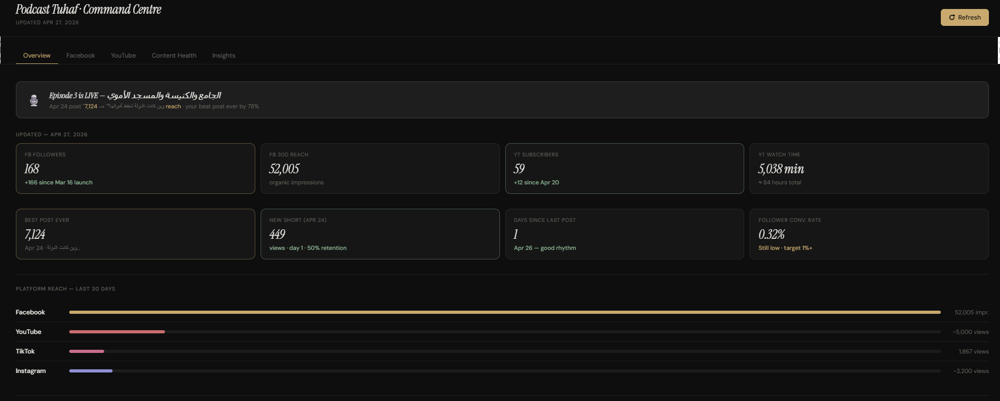
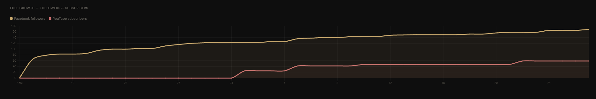
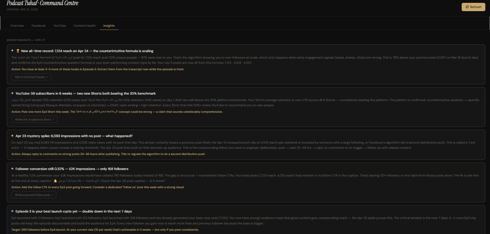

We bouwden socialmediadashboards voor Podcast Tuhaf, met een AI-strateeg die de oprichters bij elke aflevering adviseert, van script tot afgeronde video. Een nichepodcast over architectuur bereikte meer dan 50.000 kijkers met Facebook Shorts en Reels.
Resultaat: ongeveer 2 dagen werk bespaard per aflevering, besteed aan onderzoek in plaats van marketingtaken.
Marketing kostte de oprichters van de podcast voor elke aflevering vele uren. Ze wilden zien hoe posts het deden op verschillende platforms, maar vooral hadden ze iets nodig dat begreep wie ze wilden bereiken en dat hielp het publiek voor YouTube-video's, Shorts en Reels te laten groeien, in plaats van alleen cijfers te tonen.
We bouwden een dashboard dat gekoppeld is aan elk platform waarop de podcast post, met een AI-strateeg erbovenop. Die analyseert posttijden en bereik, leest de inhoud van elke aflevering en adviseert over de hele werkwijze, van script tot afgeronde video, inclusief welke fragmenten sterk genoeg zijn om nieuwe luisteraars binnen te halen.



De oprichters besparen nu ongeveer 2 dagen werk per aflevering en besteden die tijd aan onderzoek naar wat beter kan, op basis van de dashboards en het advies van de AI-strateeg. Podcast Tuhaf gaat over architectuur, een kleine niche, en bereikte toch meer dan 50.000 kijkers met Facebook Shorts en Reels. Iets vergelijkbaars nodig? Laten we praten.